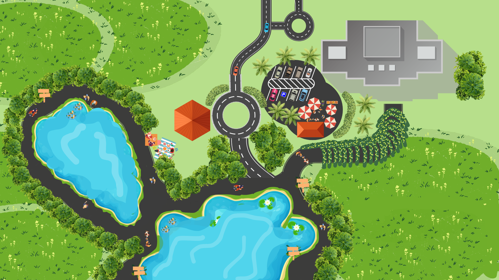

Interactive Directory
Emerald Lake & Citrine Hub
Discover lakeside activities, wayfinding ideas, and Citrine Hub improvements.
Reset Map
Explore by Category
Plan the visitor journey
All
Access
Leisure
Food
Retail

Walkway
Wayfinding
Picnic
Food Pop-Ups
Citrine Hub
←
Back to Map